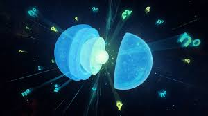

|

Nötron Yıldızları
Nötron yıldızları, evrendeki en yoğun ve en ilginç gökcisimlerinden biridir. Bu yıldızlar, büyük kütleli bir yıldızın yaşamının sonunda geçirdiği
süpernova patlaması sonrasında geriye kalan çekirdeğin çökmesiyle oluşur.
Bir nötron yıldızının çapı genellikle yalnızca 20 kilometre civarındadır, yani bir şehir büyüklüğündedir. Ancak bu küçücük hacme Güneş’in birkaç katı
kütle sığar. Bu inanılmaz yoğunluk nedeniyle nötron yıldızının bir çay kaşığı maddesi, Dünya’da milyonlarca ton ağırlığında olur. Yani madde, neredeyse
tamamen sıkışmış nötronlardan oluşur — elektronlar ve protonlar birleşmiş, atom yapısı çökmüştür.
Nötron yıldızları son derece güçlü manyetik alanlara ve hızlı dönüş hareketlerine sahiptir. Bazı nötron yıldızları saniyede yüzlerce kez döner;
bu türlere pulsar denir. Pulsarlar, dönme eksenlerinden yayılan radyo dalgalarını belirli aralıklarla Dünya’ya gönderir ve bu sinyaller, hassas ölçüm
cihazlarıyla tespit edilebilir.
Isı ve enerji bakımından son derece aktif olan nötron yıldızları, zamanla soğur ancak milyonlarca yıl boyunca güçlü radyasyon yaymaya devam eder.
Bazıları, çift yıldız sistemlerinde başka bir yıldızdan madde çekerek X-ışını ikilileri adı verilen yoğun enerji kaynaklarına dönüşebilir.
Sonuç olarak, nötron yıldızları doğrudan bir yıldızın ölümünden doğan yeni bir yaşam biçimidir — yoğun, güçlü ve karanlık bir kalıntı. Onlar,
evrenin maddeyi ne kadar aşırı koşullarda yeniden şekillendirebildiğinin somut kanıtıdır.
|